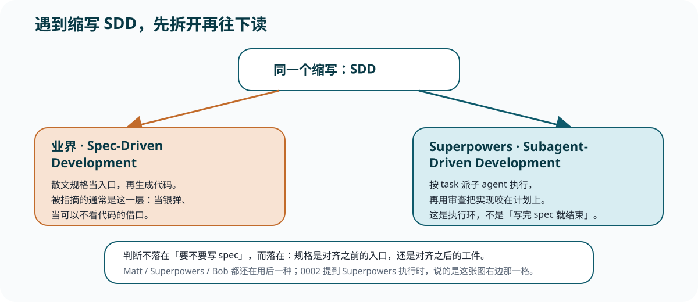

Reference
spec 判断
锁定判断句，以及业界 Spec-Driven Development 与 Superpowers Subagent-Driven Development 怎么拆开。不重讲指摘长文。
锁定判断
被指摘的是把散文规格当入口、当银弹、当可以不看代码的借口；对齐之后的规格工件，再用测试 / 审查 / 变异去咬，这三套都还在用。结论不是『不要写 spec』。
两个 SDD

| 全称 | 在哪一层 | 不要听成 |
|---|---|---|
| Spec-Driven Development | 业界：散文规格当入口，再生成代码 | 「三套方法已经弃用规格」 |
| Subagent-Driven Development | Superpowers：按 task 派子 agent 的执行环 | 「又一个 spec-first 脚手架」 |
三套还在用的那一层
| 方法 | 规格工件 | 咬合力 |
|---|---|---|
| Matt | to-spec 综合已谈过的（不再访谈） | 测试缝 + 两轴审查 |
| Superpowers | 批准后的设计 / spec | TDD + per-task / final review |
| Bob | 宪法约束 + 可执行 Gherkin | 验收测试 / 变异 / QA 脚本 |
指摘速记
- Howardism / Matt：specs-to-code 是换皮 vibe coding；代码才是战场。
- Sibylline：Markdown 有损；agent 把 spec 当建议。Opheleon / Beck 是旁证：先写完整 spec = 假定实现教不会你任何东西。
- Spec Kit #1784：生成大量文本，丢掉工作本质。